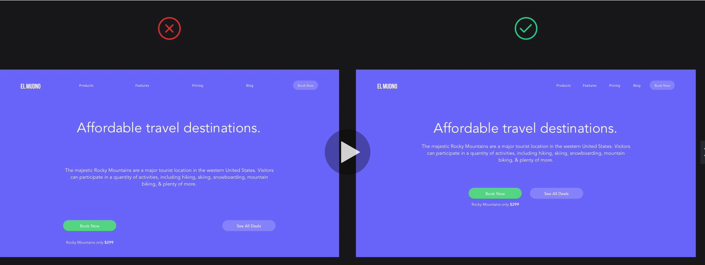
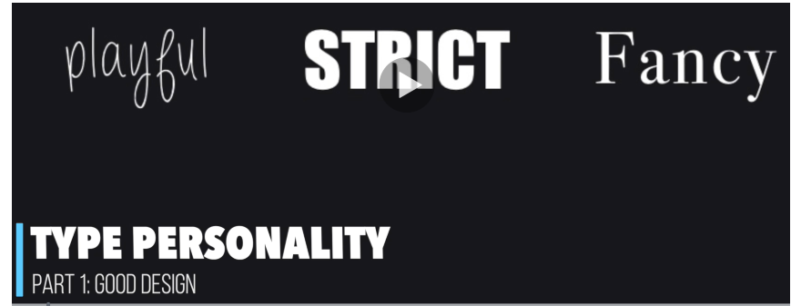
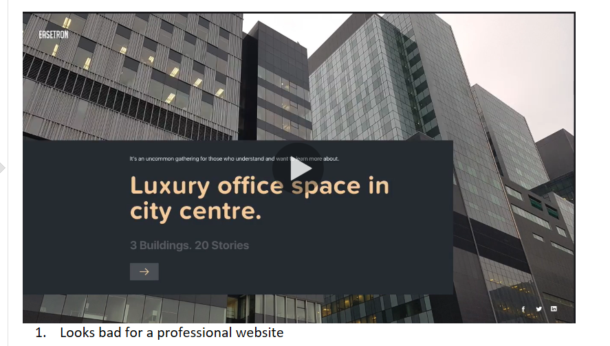
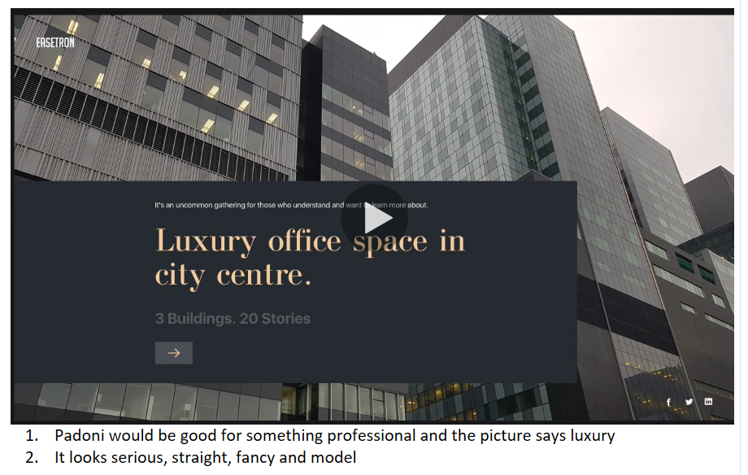
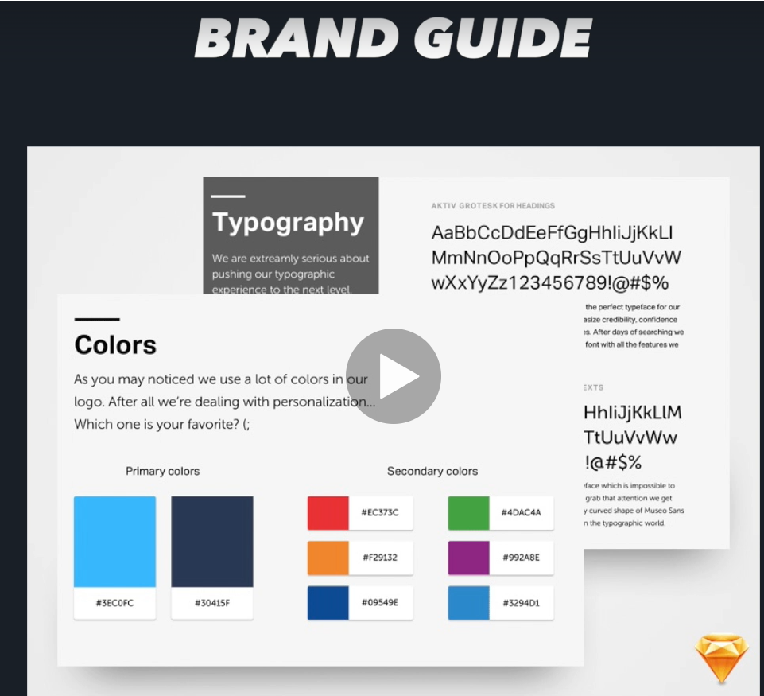
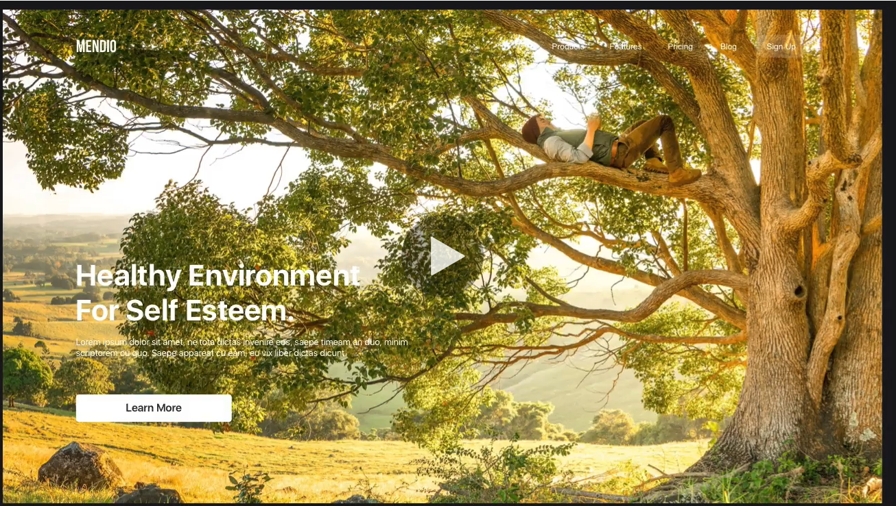
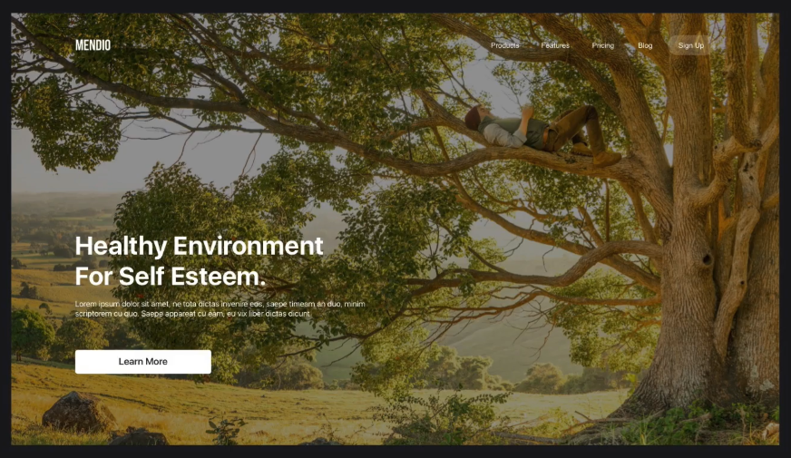

Studio Kairos · Internship · Day 2
Know how you work. Then make it beautiful.
Every person has 2 genius types — work that energizes them.
workinggenius.com · Use the arrow keys (↓) to explore each type.
W
Core gift: asking "why" — seeing what could be better.
People with the genius of Wonder naturally question whether things are working the way they should. They identify unmet needs and problems worth solving before anyone else sees them. They are energized by possibility and potential.
Strength: spotting opportunities others overlook, generating curiosity-driven questions.
Watch out for: getting stuck in endless questioning without moving to action.
I
Core gift: creating original, novel solutions to problems.
People with the genius of Invention love to take a need or problem and dream up a completely new approach. They are energized by the blank page and thrive when given room to brainstorm without constraints.
Strength: generating creative ideas that no one has thought of before.
Watch out for: moving on to the next idea before the current one is finished.
D
Core gift: evaluating and refining ideas with gut-level instinct.
People with the genius of Discernment have an intuitive ability to assess ideas and plans. They naturally know what will work and what won't — even when they can't fully explain why. They add wisdom to the creative process.
Strength: quickly filtering good ideas from bad ones, improving proposals.
Watch out for: being overly critical or dismissive without offering alternatives.
G
Core gift: rallying people and inspiring them to take action.
People with the genius of Galvanizing are natural motivators. They create momentum by communicating ideas in a way that energizes others. They love to get people moving and are at their best when rallying a team around a cause.
Strength: building enthusiasm, starting movements, communicating vision.
Watch out for: moving on before the team is fully aligned or prepared.
E
Core gift: providing support and helping others succeed.
People with the genius of Enablement are responsive and relationship-focused. They find energy in supporting others' work and stepping in wherever help is needed. They are the glue that holds teams together.
Strength: adaptability, loyalty, making others feel supported and valued.
Watch out for: saying yes to everything and running out of energy for their own priorities.
T
Core gift: pushing through to completion — getting things done.
People with the genius of Tenacity are energized by finishing. They love checking things off, delivering results, and seeing projects through to the end. They are the ones who make sure the job actually gets done.
Strength: follow-through, reliability, pushing past obstacles to deliver.
Watch out for: becoming frustrated when others don't share their drive to finish.
⏱ 10 min
Write down which personality type feels most like you and which feels like your biggest frustration with others.
"Good design is when you don't notice it."
↓ Let's unpack that.
UI (User Interface): the visual elements a user interacts with — buttons, colors, fonts, layout.
UX (User Experience): how the whole journey feels — easy, confusing, fast, frustrating.
Great UI/UX means users get what they need without thinking about it. They never feel lost. Every click makes sense. The design gets out of the way.
Guiding the user's eye — without them knowing it. ↓
Visual hierarchy is the arrangement of elements so that the most important information is seen first.
If everything shouts, nothing is heard.
Insert screenshot of a well-designed website here.
What to look for: clear headline, supporting subtext, obvious call-to-action. Your eye moves naturally top → bottom, left → right.
Insert screenshot of a poorly designed website here.
What goes wrong: too many competing elements, no clear focal point, everything the same size and weight — the user doesn't know where to look.
The invisible structure behind every clean design. ↓
Alignment means every element is placed intentionally — nothing floats randomly. Elements align to a shared edge or center.
Grid is the invisible column system that keeps layouts consistent across every page.
A grid gives a designer rules to break on purpose — which creates visual interest without chaos.
Insert screenshot of a well-aligned website here.
What to look for: consistent margins, text that starts on the same invisible line, buttons and images that sit on the grid.
Insert screenshot of a misaligned website here.
What goes wrong: elements at random positions, inconsistent margins, text that feels like it was dropped wherever there was space.
Color doesn't just look good — it communicates. ↓
Color theory is the set of rules and guidelines designers use to choose colors that work together and send the right emotional message.
Same layout — completely different feeling.
Clear Lake Tutor uses blue — trust, calm, competence.
Elements that are related should be close to one another.

The font you pick says something before a word is read.

Hard to read · No hierarchy · Wrong personality

Clear · Consistent · Matches the brand

The rules that keep a brand looking like itself everywhere. ↓
Brand guidelines (or a brand style guide) are the documented rules for how a brand looks, sounds, and feels across every touchpoint.

Netflix is one of the best examples of a globally consistent brand:
The red "N" is never stretched, rotated, or recolored. Always on black or white.
Netflix Red (#E50914) is used globally — instantly recognizable on any device or billboard.
Even at the smallest size on a phone screen, you know it's Netflix — that's the power of brand guidelines.
A technique that makes text readable on any photo. ↓


coachsalinasmathtutor.com
What design principles are missing?
clearlaketutor.com
What does it do well?
⏱ 10 min Open both sites. Use what you've learned today — hierarchy, alignment, color, typography — to compare them.
Know your genius. Design with intention.
Looking ahead: we'll start applying these principles directly to real projects — websites, content, and marketing.
Good design is a skill. Practice it every day.